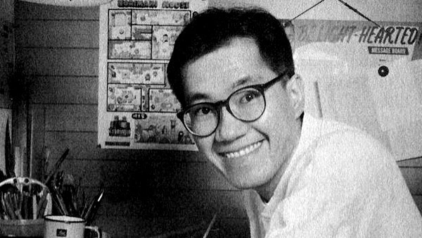
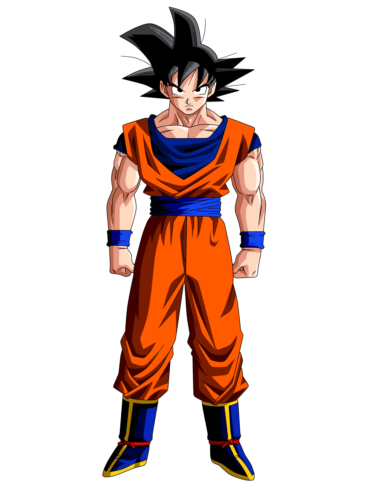
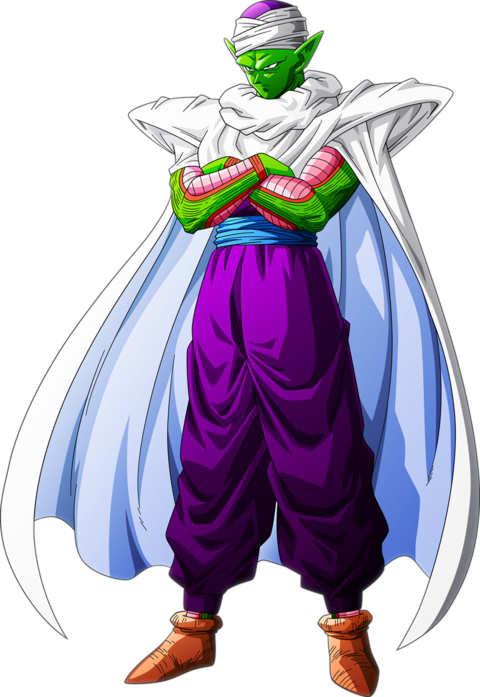

Dragon Ball Z

Akira
Dragon Ball Z foi uma série de animação produzida pela Toei Animation. Baseada na série de mangá Dragon Ball escrita por Akira Toriyama, Dragon Ball Z corresponde aos volumes 17 ao 42 do mangá que foi publicado na revista, Weekly Shonen Jump, de 1988 a 1995, e estreou no Japão na Fuji TV em 26 de abril de 1989, e terminou dia 31 de janeiro de 1996 com o total de 291 episódios,antes de ser dublada em diversos territórios ao redor do mundo, incluindo Estados Unidos, Austrália, Europa, Índia e América Latina.
A série já foi exibida em mais de 80 países ao redor do mundo.O sucesso da série Dragon Ball levou à criação da continuação, Dragon Ball Z, sendo um dos animes mais conhecidos de todos os tempos. Esta série aparece recheada de longos combates com muita ação.Em Dragon Ball Z, as histórias possuem um clima mais sério que as de seu antecessor. Substituíram a comédia, mas o humor ainda existe em muitas partes da série. Possui vários episódios em que o suspense é entrelaçado aos acontecimentos que primeiramente não parecem ter grande relevância, ou de fatos despercebidos e revelados com maiores detalhes no auge de tal acontecimento
Personagens

Son Goku, cujo nome de nascimento é Kakarotto, é o protagonista da franquia Dragon Ball, criada por Akira Toriyama. Sua primeira aparição ocorreu no primeiro capítulo do mangá Dragon Ball, intitulado Bulma e Son Goku, publicado na revista Weekly Shōnen Jump em 3 de dezembro de 1984. Goku é inspirado num personagem com o mesmo nome, personagem principal do romance chinês Jornada ao Oeste. Porém, Toriyama mudou algumas de suas características para ser mais original. Goku é apresentado como um menino estranho, com rabo de macaco e força sobre-humana. Conforme a história se desenrola, é revelado que ele descende de uma raça fictícia chamada Saiyajins, uma das raças mais poderosas do universo.

Vegeta, o Príncipe dos Saiyajins é um dos principais personagens do mangá de Dragon Ball. Ele é o príncipe da raça dos Saiyajins e o maior rival de Goku/Kakaroto, pelo fato de Vegeta não aceitar que um saiyajin de classe baixa como ele seja mais poderoso que o príncipe da raça.Inicialmente, o personagem foi apresentado como um vilão que queria invadir a Terra para usar as esferas do dragão com a finalidade de se tornar um imortal. Porém, com o tempo, seu coração foi cada vez mais abrandando e ele se tornou uma pessoa de bom coração, com uma família e amigos.
